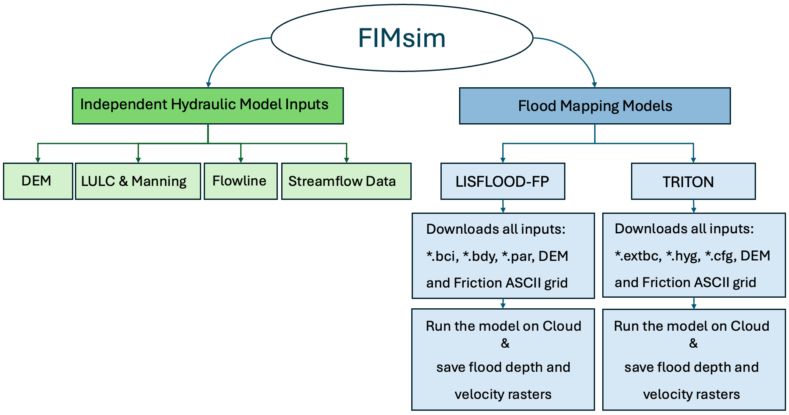

DEM Mode
Download and process Digital Elevation Models for any Area of Interest.
Output: DEM raster (.tif / .asc / .gpkg).
Flood Inundation Model Simulation Tool
FIMsim is organized into two parts. The first part prepares input parameters: DEM, LULC and Manning's n, Flowline, and Streamflow Data. The second part prepares flood mapping model inputs, starting with LISFLOOD-FP and TRITON.
FIMsim is organized into two parts. Part 1 prepares individual, model-independent input datasets. Part 2 takes those inputs and builds a complete, model-ready package for a 2-D flood simulation. The framework below shows how the two parts fit together and which files each model produces.

Download and process Digital Elevation Models for any Area of Interest.
Output: DEM raster (.tif / .asc / .gpkg).
Download land use/land cover data and assign Manning's n roughness coefficients.
Output: LULC raster and Manning's n raster / table.
Download NHD river flowlines, identify the main river, save USGS gages, and export NWM feature IDs.
Output: flowlines, gages CSV, feature IDs CSV.
Download discharge time series from NOAA NWM retrospective, NOAA NWM forecast, or USGS stream gages.
Output: CSV files with time_hours and discharge_cms.
Prepares raster terrain, Manning's n, boundary condition, discharge, and simulation control files.
Prepares raster terrain, friction, boundary, hydrograph, and configuration files for TRITON runs.
Generates OWP HAND flood inundation maps from AOI files or HUC8 IDs using the three-step FIMserv workflow.
Manual section reserved for the ARC-Curve2Flood flood mapping workflow.
The Area of Interest (AOI) is the single most important input in FIMsim. It is the polygon that defines the model domain, and its edges become the outer boundary of the flood simulation. Almost every mode — DEM, LULC, Flowline, LISFLOOD-FP, TRITON, and HAND-FIM — is clipped to this polygon, so the shape you draw here decides the quality of every later step. Prepare the AOI carefully before you start the workflow.
.shp) or GeoPackage (.gpkg).Both LISFLOOD-FP and TRITON need to know where water enters and where water leaves the domain. FIMsim finds those locations automatically at the points where the river crosses the AOI boundary:
BC.bci) and the source point in
TRITON (.src).
.extbc).
Because these boundary points are derived from the AOI edges, an inaccurate edge produces an inaccurate boundary condition. If the river only clips a corner, runs parallel to an edge, or exits through a ragged edge, the inflow and outflow can land in the wrong place and the simulation will not represent the real flow path.
Draw the domain so the main river enters through one edge and leaves through another, ideally crossing each edge close to perpendicular. This gives a well-defined inflow and outflow cell.
Avoid a layout where the river only cuts across a corner of the polygon. A corner crossing leaves most of the domain unused and makes the boundary point ambiguous.
The polygon should span the whole reach you want to model, including the floodplain on both banks, so the inundation is not cut off by the domain edge. When no single high-order river spans the domain, FIMsim uses the longest river that covers the study area for the inflow / outflow.
Prefer a single, simple, closed polygon per domain rather than many small or overlapping parts. Simple edges make the boundary cells unambiguous and keep the DEM and friction grids clean.
Keep the domain size reasonable for your target cell size (for example 10 m). A very large domain at a fine cell size produces very large grids and long run times.
Tip: after you run Flowline Mode or the BCI / BC step, open the AOI preview and confirm the upstream and downstream markers sit on the edges where the river truly enters and leaves. If they do not, adjust the AOI polygon and re-run — it is much easier to fix the boundary here than after the model is built.
Before you start, make sure your AOI is ready. See Preparing the AOI for how the polygon and its edges should be drawn.
DEM Mode downloads and processes Digital Elevation Models for one or more Areas of Interest using USGS 3DEP data, including hydro-conditioned DEMs used for HAND-based flood inundation mapping.
Every session starts with a project. The project folder stores all downloaded files and settings.
An AOI is a polygon shapefile (.shp) or GeoPackage (.gpkg) that defines the study boundary.
For each AOI, choose the DEM source and output format.
| 1 | Source | 3DEP: USGS 3D Elevation Program. HAND DEMs. |
|---|---|---|
| 2 | Cell size | Output raster cell size in meters. Default is 10 m. Match this to your flood model's required resolution. |
| 3 | Output format | GeoTIFF (.tif), GeoPackage (.gpkg), ASCII Grid (.asc). |
For multiple AOIs, each AOI gets its own settings card. Use Apply current AOI's settings to all to copy settings across all AOIs at once.
<project>/<AOI name>/dem/dem.tif, or .asc / .gpkg depending on your format choice.Before you start, make sure your AOI is ready. See Preparing the AOI for how the polygon and its edges should be drawn.
LULC Mode downloads land use / land cover data and derives Manning's n hydraulic roughness coefficients for each AOI.
Follow the same steps as DEM Mode. The project and AOI setup are identical.
Choose how Manning's n is assigned across the AOI.
| Fixed (Uniform) | A single Manning's n value is applied uniformly across the entire AOI. Use this for simple simulations or when land cover variability is not critical. No LULC download is required. |
|---|---|
| Varying (Per LULC class) | LULC data is downloaded and each land cover class is assigned its own Manning's n value. |
In Varying mode, a table lists all LULC classes with default Manning's n values.
<project>/<AOI name>/lulc.tif and <AOI name>/lulc.ascii if requested.Before you start, make sure your AOI is ready. See Preparing the AOI — the river must cross the AOI edges cleanly so the upstream and downstream markers land in the right place.
Flowline Mode downloads and processes river network data for one or more Areas of Interest using NHD flowlines. It can save the main river, all flowlines clipped to the AOI, nearby USGS gages, and NWM feature IDs.
Follow the same project and AOI setup steps as DEM Mode. After AOIs are confirmed, each AOI gets its own flowline settings card.
For each AOI, choose which flowline products to save and which format to use.
| Option | Description | Available formats / notes |
|---|---|---|
| Main river | Saves the highest-stream-order NHD river reach identified inside the AOI. | Shapefile (.shp), GeoPackage (.gpkg), TIF raster (.tif), or CSV (.csv). Selected by default. |
| All flowlines | Saves the full NHD reach set clipped to the AOI. | Shapefile, GeoPackage, TIF raster, or CSV. Optional. |
| Cell size for TIF | Controls raster cell size when either Main river or All flowlines is saved as a TIF. | Default is 30 m. Use the same or similar resolution as the hydraulic model grid when possible. |
| USGS gages CSV | Saves a CSV of USGS stream gages found for the AOI. | Selected by default. The gage IDs can be used later in Streamflow Data Mode. |
| Feature IDs CSV | Saves NWM feature IDs from the downloaded NHD flowlines. | Saved automatically. These IDs can be used for NWM retrospective or forecast streamflow downloads. |
<project>/<AOI name>/.| Output | Typical filename | Purpose |
|---|---|---|
| Main river | main_river_<AOI name>.* | Main NHD river reach selected for the AOI. |
| All flowlines | all_flowlines_<AOI name>.* | All NHD flowlines clipped to the AOI. |
| USGS gages | usgs_gages_<AOI name>.csv | Station number, station name, latitude, and longitude for USGS gages. |
| NWM feature IDs | feature_ids_<AOI name>.csv | Feature IDs / COMIDs used by NWM streamflow downloads. |
Streamflow Data Mode downloads discharge time series without requiring an AOI. Enter NWM feature IDs or USGS gage numbers directly, paste comma-separated values, or browse to a CSV/TXT file with one ID per line.
Start by creating or opening a project. Streamflow CSV outputs are saved directly in the project folder.
Enable one or more streamflow sources. Each enabled source has its own ID field, date range, and interval settings.
| Source | Required ID | Date coverage | Interval |
|---|---|---|---|
| NWM Retrospective | NWM feature ID / COMID | 1979-02-01 to 2020-12-31. USA only. | 0.5h, 1h, 3h, 6h, 12h, or 24h. Default is 1h. |
| NWM Forecast | NWM feature ID / COMID | Rolling forecast window, about 10 days from the current date. USA only. No historical archive. | Forecast output is saved at 1-hour interval. |
| USGS Stream Gage | USGS gage number | Depends on gage availability and requested period. | 15min, 30min, 1h, 3h, 6h, 12h, or 24h. Default is 1h. |
| Source | Filename pattern | CSV columns |
|---|---|---|
| NWM Retrospective | nwm_retro_<feature_id>.csv | time_hours, discharge_cms |
| NWM Forecast | nwm_forecast_<feature_id>.csv | time_hours, discharge_cms |
| USGS Stream Gage | usgs_discharge_<gage_id>.csv | time_hours, discharge_cms |
The primary model-ready discharge field is discharge_cms,
which stores discharge in cubic meters per second. The
time_hours column represents elapsed hours from the first
timestamp and is useful for hydraulic model boundary inputs.
Flood Mapping Models convert prepared terrain, roughness, boundary, and discharge inputs into complete model-ready folders. Four model options are included in this part. LISFLOOD-FP, TRITON, and OWP HAND-FIM are documented below. ARC-Curve2Flood is reserved for its full workflow documentation.
Prepares raster terrain, Manning's n, boundary condition, discharge, and simulation control files.
Prepares raster terrain, friction, boundary, hydrograph, and configuration files for TRITON runs.
Generates OWP HAND flood inundation maps from AOI files or HUC8 IDs using the three-step FIMserv workflow.
Manual section reserved for the ARC-Curve2Flood flood mapping workflow.
The AOI edges become this model's boundary. Before you start, see Preparing the AOI — it explains why the river must cross the edges cleanly so the BCI upstream inflow and downstream outflow are placed correctly.
The LISFLOOD-FP module prepares the input folder needed to run a LISFLOOD-FP flood simulation. It combines the same source datasets used in the input-parameter modules, then writes model-specific files for elevation, roughness, boundary locations, discharge hydrographs, and simulation settings.
The LISFLOOD-FP workflow is organized into seven tabs. Each tab collects one group of settings and writes one part of the final LISFLOOD-FP input folder. A log panel reports progress, warnings, and saved file locations.
| Tab | Purpose | Main output |
|---|---|---|
| Project | Create a project folder or open an existing project. | Project workspace |
| AOI | Load AOI polygons, select features, and create one model folder per AOI. | AOI folders |
| DEM | Download or use a terrain raster and convert it to LISFLOOD-FP format. | dem.ascii |
| Manning | Use a fixed value or LULC-based Manning's n table. | lulc.ascii |
| BCI | Define upstream and downstream boundary locations. | BC.bci |
| BDY | Prepare discharge hydrographs for variable-flow boundaries. | BC.bdy |
| PAR File | Write simulation controls and file references. | <project>.par |
| Step | What to do | Notes |
|---|---|---|
| 1. Project | Select a base directory and project name, or open an existing project. | The app stores AOI-specific files inside the project folder. |
| 2. AOI | Load an AOI shapefile, choose one or more polygons, and confirm the AOIs. | The app can detect state, HUC information, main river, USGS gages, and CRS where available. |
| 3. DEM | Download USGS 3DEP data or use a local GeoTIFF, then choose the target cell size. | The default cell size is commonly 10 m. The model-ready raster is written as dem.ascii. |
| 4. Manning | Choose a fixed Manning's n value or generate spatially varying roughness from LULC. | Supported LULC paths include NLCD, Sentinel-2, or a user-provided raster. |
| 5. BCI | Set upstream and downstream boundary locations using automatic NHD detection or manual coordinates. | Typical boundary choices include QVAR or QFIX upstream, and FREE or HFIX downstream. |
| 6. BDY | Choose NWM retrospective, NWM forecast, USGS gage data, or a user hydrograph file. | The generated hydrograph supports QVAR boundary conditions. |
| 7. PAR File | Set simulation timing, solver options, initial condition, checkpointing, and output options. | The app writes a LISFLOOD-FP .par file that references the prepared inputs. |
For each AOI, the LISFLOOD-FP files are saved in a
lisflood-files folder inside the AOI project folder.
| File | Description |
|---|---|
| dem.ascii | Model-ready elevation grid. |
| lulc.ascii | Manning's n roughness grid prepared from fixed or LULC-based settings. |
| BC.bci | Boundary condition index file defining boundary locations and types. |
| BC.bdy | Boundary discharge hydrograph for variable-flow boundaries. |
| <project>.par | LISFLOOD-FP simulation control file. |
The AOI edges become this model's boundary. Before you start, see
Preparing the AOI — it explains why the
river must cross the edges cleanly so the source inflow
(.src) and external boundary (.extbc) are
placed correctly.
The TRITON module follows the same overall structure as the LISFLOOD-FP module, but writes TRITON-specific files. It prepares the terrain grid, friction grid, external boundary files, hydrograph, and configuration file needed for a TRITON flood simulation.
The TRITON workflow is organized into seven tabs. The names differ from LISFLOOD-FP where TRITON uses different file concepts, but the workflow remains parallel: define the project and AOI, prepare grids, set boundaries, provide discharge data, then write the model control file.
| Tab | Purpose | Main output |
|---|---|---|
| Project | Create or open a TRITON preparation project. | Project workspace |
| AOI | Load AOI polygons and create AOI-specific TRITON folders. | AOI folders |
| DEM | Download or import terrain and convert it to TRITON ASCII grid format. | dem.asc |
| Friction | Create a fixed or LULC-based roughness grid for TRITON. | friction .asc grid |
| BC | Create source and external boundary definitions. | .src and .extbc |
| Hydrograph | Prepare discharge time series for model inflow. | <AOI>.hyg |
| Config | Write TRITON run settings and file references. | <AOI>.cfg |
| Step | What to do | Notes |
|---|---|---|
| 1. Project | Select a base directory and project name, or open an existing TRITON project. | The app keeps TRITON outputs in AOI-specific folders. |
| 2. AOI | Load the AOI shapefile, select the polygons to process, and confirm the AOIs. | Multiple AOIs can be prepared in one project. |
| 3. DEM | Download terrain data or use a local DEM, then create the TRITON DEM grid. | The output is saved as dem.asc and is referenced by the TRITON config file. |
| 4. Friction | Choose fixed friction or generate a spatial roughness grid from LULC data. | The setup mirrors the Manning workflow but writes TRITON friction output. |
| 5. BC | Use automatic NHD detection or manual coordinates to set the inflow point and downstream boundary segment. | Downstream boundary options include free flow, water level versus time, normal slope, and Froude number. |
| 6. Hydrograph | Select NWM retrospective, NWM forecast, USGS gage data, or upload a CSV/XLSX hydrograph. | The app writes a TRITON .hyg file for the source boundary. |
| 7. Config | Set output format, print option, time step, print interval, and Courant number. | The app automatically fills file references, projection, number of sources, number of external boundaries, and simulation duration. |
For each AOI, the TRITON files are saved in a
triton-files folder inside the AOI project folder.
| File | Description |
|---|---|
| dem.asc | TRITON-ready elevation grid. |
| friction .asc grid | TRITON roughness or friction grid created from fixed or LULC-based settings. |
| .src | Source boundary file describing inflow source locations. |
| .extbc | External boundary condition file describing downstream boundary segments and types. |
| <AOI>.hyg | Hydrograph file containing time and discharge values. |
| <AOI>.cfg | TRITON configuration file with run controls and input references. |
When you run from an AOI file, make sure it is ready first. See Preparing the AOI. (This module can also run directly from HUC8 IDs, in which case no AOI polygon is needed.)
The OWP HAND-FIM module uses the FIMserv workflow to generate flood inundation maps from National Water Model discharge and OWP HAND rasters. The current workflow has three steps: Project, AOI, and FIM. The FIM step combines streamflow download, HAND raster download, and flood map generation in one run.
The module is organized as a three-tab wizard. It can be run from AOI polygons or directly from HUC8 IDs. When multiple AOIs or HUC8 IDs are confirmed, the FIM tab creates one settings card for each item.
| Step | Purpose | Main action |
|---|---|---|
| 1. Project | Create or open a project workspace. | Choose the project folder used for HUC8 folders and outputs. |
| 2. AOI | Define the run area using an AOI file or HUC8 IDs. | Confirm AOIs or HUC8 IDs and create the per-item setup. |
| 3. FIM | Fetch discharge, download OWP HAND rasters, and generate flood maps. | Click Generate FIM for all. |
| Step | What to do | Notes |
|---|---|---|
| 1. Project | Select a base directory and project name, or open an existing project. | The project stores confirmed HUC8 folders, downloaded data, discharge files, and generated FIM outputs. |
| 2. AOI file | Choose AOI file as the input type, then load a shapefile or GeoPackage and confirm the selected AOI features. | The app resolves the HUC8 area covered by each AOI and prepares cards for the FIM step. |
| 2. HUC8 IDs | Choose HUC8 IDs as the input type, type IDs directly or browse to a CSV, then click Add to confirmed HUC8. | CSV input can contain one HUC8 ID per line. IDs are zero-padded automatically. |
| 3. FIM settings | For each AOI or HUC8 card, choose the discharge source and date settings. | Use Apply current card's settings to all when several cards should use the same streamflow settings. |
| 3. Generate FIM | Optionally check Also produce a water-depth map, then click Generate FIM for all. | The app processes each card in order and shows progress as completed AOIs out of the total. |
| Source | How it is used | Notes |
|---|---|---|
| NWM Retrospective range | Downloads discharge for a start and end date, then identifies the hydrograph and available event timesteps. | Use this when generating a historical event map. |
| Specific retrospective times | Uses selected event times to generate one FIM for each chosen time. | Useful after reviewing available retrospective timesteps. |
| NWM Forecast | Uses the latest forecast run or a selected forecast date and hour. | Forecast range and sorting options are set on each FIM card. |
FIMserv writes outputs under output/flood_<huc8> in
the active project or AOI folder. When an AOI file is used, the final
products can also be clipped to the AOI boundary.
| Output | Description |
|---|---|
| Flood extent raster | Wet/dry inundation output. The preview labels wet cells as 1 and dry cells as 0. |
| Water-depth raster | Optional depth product. Depth is converted from millimetres to metres before mosaic or clipping. |
| Mosaicked outputs | Created when multiple HUC8s are used for one AOI or run. |
| Clipped outputs | Created when an AOI boundary is provided and clipping is enabled by the workflow. |
This section is reserved for the ARC-Curve2Flood flood mapping workflow. It appears in the manual structure so this part has four model options, but the full step-by-step documentation has not been added yet.